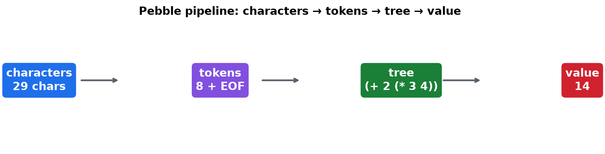
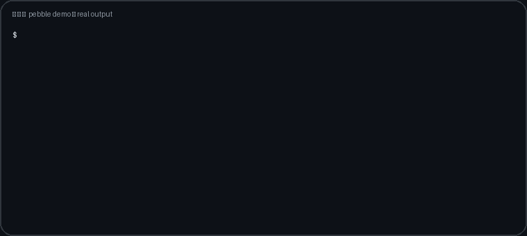
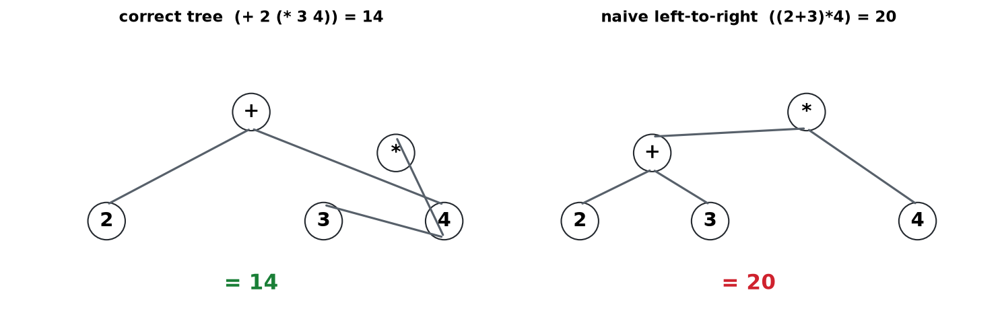
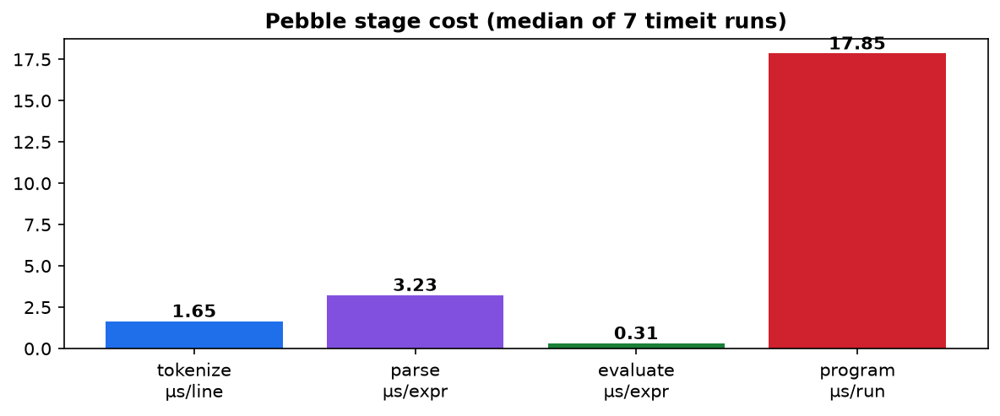

Why 2 + 3 × 4 = 14, not 20. A tiny language — numbers, variables,
let, print — built in four steps: characters → tokens →
tree → value (+ memory). Every claim on this page runs: 23 tests,
500 fuzzed expressions matching Python exactly, live-market numbers, benchmarks.
No install needed here — the playground and quiz run entirely in your browser.
Let's work this out in a step-by-step way to be sure we have the right answer.
2 + 3 * 4 → 5 tokens.(+ 2 (* 3 4)) — the * sits deeper, so it runs first.3*4=12, then 2+12=14.let price = 5 stores; print shows.^ caret.14 is pre-computed).
Above: the exact bytes python -m pebble --trace '2 + 3 * 4' prints, typed live. The README embeds the same session as assets/demo.gif because GitHub plays GIFs inline.

Type an expression (e.g. 2 + 3 * 4) or a full program with let/print lines. Nothing leaves your browser.
Press Run.

Naive left-to-right is wrong on 3/9 unparenthesized rows — exactly where a tighter operator follows a looser one.

Representative medians (µs): tokenize ≈1.6, parse ≈3.3, evaluate ≈0.4, program ≈18. Your machine's 7 runs are in benchmarks/throughput_results.json.
Parsing dominates (≈8× evaluation) — the stage that builds the tree costs more than the stage that walks it. Live-market check: BTC 86158 × 3 + 2 → Pebble 258476, 86158, 2, 2679 = Python exactly.
| You are… | Do this next |
|---|---|
| New to languages | Read README §A, then open pebble/tokens.py (73 lines) top to bottom. |
| Interview prep | Redo the % exercise blind (exercises/exercise_percent.md), then add unary minus. |
| Reviewer | Run make verify or docker compose up --build; compare your JSON to the committed artifacts. |
| Teacher | Project §E + playground + quiz: predict → run → explain. 30 minutes, zero setup. |
Push → Settings → Pages → Source: Deploy from a branch → branch main, folder / (root) → open https://<you>.github.io/<repo>/preview.html. Or choose GitHub Actions source — .github/workflows/pages.yml is included.
MIT licensed. Numbers on this page mirror experiments/*.json and benchmarks/*.json in the repo.